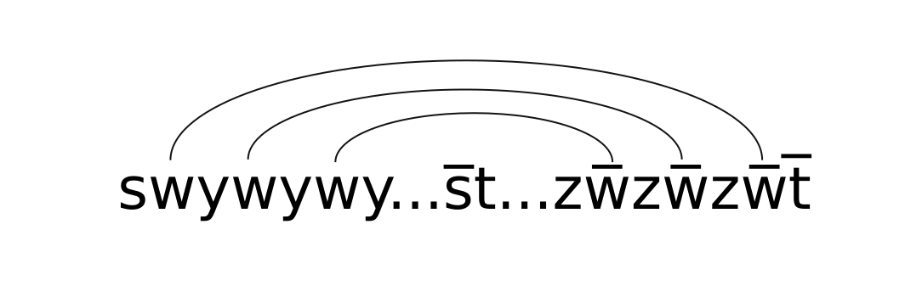

Free groups, Lengths and Computer Proofs
Siddhartha Gadgil
Indian Institute of Science
joint with
the rest of (spontaneous) polymath 14
The PolyMath 14 participants
- Tobias Fritz, MPI MIS
- Siddhartha Gadgil, IISc, Bangalore
- Apoorva Khare, IISc, Bangalore
- Pace Nielsen, BYU
- Lior Silberman, UBC
- Terence Tao, UCLA
- On Saturday, December 16, 2017, Terrence Tao posted on his blog a question, which Apoorva Khare had asked him.
- Six days later, this was answered in a collaboration involving several mathematicians (and a computer).
- This the story of the answer and its discovery.
Is there a homogeneous, (conjugacy invariant) length function on the free group on two generators?
Length functions
- Fix a group $G$, i.e. a set with an associative product with inverses.
- A pseudo-length function $l: G \to [0, \infty)$ is a function such
that:
- $l(e) = 0$.
- $l(g^{-1}) = l(g)$ , for all $g \in G$.
- (Triangle inequality) $l(gh) \leq l(g) + l(h)$, for all $g,h\in G$.
- A length function is a pseudo-length function such that $l(g) > 0$ whenever $g\neq e$ (positivity condition).
Conjugacy-invariance and Homogeneity
- A pseudo-length function $l$ is said to be conjugacy invariant if $l(ghg^{-1})=l(h)$ for all $g, h \in G$.
- Conjugacy often corresponds to change of coordinates.
- $l$ is said to be homogeneous if $l(g^n) = nl(g)$ for all $g \in G$.
- Homogeneity was motivated by norms on vector spaces.
Length functions on $\mathbb{Z}^2$
- The group $(\mathbb{Z}^2, +) = \{(n, m) : n, m \in \mathbb{Z}\}$ with $(n_1, m_1) + (n_2, m_2) = (n_1 + n_2, m_1 + m_2)$.
-
Two length functions on $\mathbb{Z}^2$ are:
- $l_1((a,b)) = |a| + |b|$,
- $l_2((a, b)) = \sqrt{a^2 + b^2}$
- These are homogeneous (and conjugacy invariant).
- The function $l'((a, b)) = \sqrt{|a|} + \sqrt{|b|}$ is a length function, but not homogeneous.
- The function $l''((a, b)) = |a - b|$ is a homogeneous pseudo-length function which is not positive.
Groups without homogeneous length functions
- If $l$ is a homogeneous length function on $G$ and $g\in G$ is such that $g^n=e$ then $l(g)=0$ as $nl(g) = l(g^n) = 0$.
- Thus, if $G$ has torsion, i.e., there exists $g\neq e\in G$, such that $g^n =e$ for some $n > 0$ and $g\neq e$, then there is no homogeneous length function on $G$.
- In particular finite groups have no homogeneous length functions.
Free group $\mathbb{F}_2$ on $\alpha$, $\beta$
- Consider words in four letters $\alpha$, $\beta$, $\bar{\alpha}$ and $\bar{\beta}$.
- We multiply words by concatenation, e.g. $\alpha\beta\cdot\bar{\alpha}\beta = \alpha\beta\bar{\alpha}\beta$.
- Two words are regarded as equal if they can be related by cancelling adjacent letters that are inverses, e.g. $\alpha\beta\bar{\beta}\alpha\beta = \alpha\alpha\beta$.
- This gives a group;
- the identity is the empty word
- every word has an inverse, e.g., $(\alpha\bar{\beta}\alpha\beta\beta)^{-1} = \bar{\beta}\bar{\beta}\bar{\alpha}\beta\bar{\alpha}$.
Word length on $\mathbb{F}_2$
- Any word is equivalent to a unique reduced word, i.e., where we have no cancellation e.g. $\alpha\beta\bar{\beta}\alpha\beta\bar{\beta}\beta\bar{\alpha}$ reduces to $\alpha\alpha\beta\bar{\alpha}$.
- The word length $l_0$ on $\mathbb{F_2}$ is the length of the reduced word representing an element.
- The word length is not conjugacy-invariant as $l_0(\alpha\beta\bar{\alpha}) = 3 \neq 1 = l_0(\beta)$.
- The word length is also not homogeneous, e.g., $l_0((\alpha\beta\bar{\alpha})^2) = l_0(\alpha\beta\beta\bar{\alpha}) = 4 \neq 2l_0(\alpha\beta\bar{\alpha})$.
Pullback pseudo-length on $\mathbb{F}_2$
- We define a homomorphism $ab: \mathbb{F}_2 \to \mathbb{Z}^2$.
- For a word $g$, let $n_\alpha(g)$ and $n_\beta(g)$ be the number of $\alpha$'s and $\beta$'s counted with sign.
- Define $ab(g) = (n_\alpha(g), n_\beta(g))$, e.g. $ab(\alpha\alpha\beta\bar{\alpha}\bar{\beta}\alpha\bar{\beta}) = (2, -1)$.
- We get a pullback pseudo-length $l$ on $\mathbb{F}_2$ by $l_{ab}(g) = l_1(ab(g)) = |n_\alpha(g)| + |n_\beta(g)| $.
- As $l_1$ is homogeneous, so is $l_{ab}$.
- However, this is not a length function as $l_{ab}([\alpha, \beta]) = l(\alpha\beta\bar{\alpha}\bar{\beta}) =0$, violating positivity (recall $[g, h] = ghg^{-1}h^{-1}$).
The Main results
- Question: Is there a homogeneous length function on the free group on two generators?
- Answer: No; we in fact describe all homogeneous pseudo-lengths.
- Theorem: Any homogeneous pseudo-length function on a group $G$ is the pullback of a pseudo-length on its abelianization $G / [G, G]$.
- Corollary: If $G$ is not abelian (e.g. $G = \mathbb{F}_2$) there is no homogeneous length function on $G$.
- In fact, every homogeneous pseudo-length is the pullback of a norm on a vector space.
Lengths from Non-crossing matchings

- Given a word in $\mathbb{F}_2$, we consider matchings such that
- letters are paired with their inverses,
- there are no crossings
- The energy is the number of unmatched letters.
Watson-Crick length on $\mathbb{F}_2$
- For $g\in \mathbb{F}_2$, define the Watson-Crick length $l^{}_{WC}(g)$ to be the minimum number of unmatched letters over all non-crossing matchings.
- $l^{}_{WC}$ is unchanged under cancellation (hence well-defined on $\mathbb{F}_2$) and conjugacy invariant.
- In fact it is the maximal normalized conjugacy-invariant length function on $\mathbb{F}$. Candidate?
- However, if $g=\alpha[\alpha, \beta]$, then $l^{}_{WC}(g^2)= 4$, but $l^{}_{WC}(g) = 3$, violating homogeneity.
The great bound chase
- By Tuesday morning, most people were convinced that there are no homogeneous length functions on the free group, and probably $l([\alpha, \beta]) = 0$ for homogeneous pseudo-lengths.
- There was a steady improvements in the combinatorial/analytic bounds on $l([\alpha, \beta])$.
- These seemed to be stuck above 1 (as observed by Khare) - but eventually broke this barrier (work of Fritz, Khare, Nielsen, Silberman, Tao).
- At this stage, my approach diverged.
- We can recursively compute the Watson-Crick length $l^{}_{WC}(g)$ for a word $g$.
- This gives an upper bound on all conjugacy-invariant normalized lengths.
- This can be combined with using homogenity.
- Using this, I obtained an upper bound of about $0.85$ on $l(\alpha, \beta)$.
- This was upgraded to a (computer) checkable proof.
- On Thursday morning, I posted an in principle human readable proof of a bound.
Computer Assisted proofs: beyond (symbolic) computation, enumeration?
- The computer-generated proof was studied by Pace Nielsen, who extracted the internal repetition trick.
- This was extended by Nielsen and Fritz and generalized by Tao; from this Fritz obtained the key lemma:
- Let $f(m, k) = l(x^m[x, y]^k)$. Then $f(m, k) \leq\frac{f(m-1, k) + f(m+1, k-1)}{2}$.
- A probabilistic argument of Tao finished the proof. [Algebra Number Theory , 12 (2018), 1773-1786.]
- Lemma: If $x = s(wy)s^{-1} = t(zw^{-1})t^{-1}$, we have $l(x)\leq \frac{l(y)+ l(z)}{2}$.
- Proof: $l(x^nx^n) = l(s(wy)^ns^{-1}t(zw^{-1})^nt^{-1})$ $\leq n(l(y) +l(z)) + 2(l(s) + l(t))$ 
- Use $l(x) = \frac{l(x^nx^n)}{2n}$ and take limits.
- Lemma: $f(m, k) \leq\frac{f(m-1, k) + f(m+1, k-1)}{2}$, where $f(m, k) = l(x^m[x, y]^k)$.
- In other words, for $Y$ a Rademacher random variable, i.e., $Y$ is $1$ or $-1$ each with probability $1/2$, $f(m, k)\leq E(f( (m, k - 1/2) + Y(1, -1/2) ))$.
- Hence for $Y_i$ i.i.d. Rademacher random variables, $f(0, n) \leq E(f((Y_1 + Y_2 + \dots + Y_{2n}) (1, -1/2) ))$,
- By triangle inequality, $f(a, b) \leq A\Vert (a, b) \Vert$.
- $Y_1 + Y_2 + \dots Y_{2n}$ has mean $(0, 0)$ and variance $2n$, so $E(\Vert Y_1 + Y_2 + \dots Y_{2n} \Vert) \leq B\sqrt{n}$.
- We deduce that $l([x, y]^n) = f(0, n) \leq C\sqrt{n}$, hence $l([x, y]) = 0$.
Computer bounds and proofs
- For $g=ah$, $a \in \{\alpha, \beta, \bar{\alpha}, \bar{\beta}\}$, the length
$l^{}_{WC}(g)$ is the minimum of:
- $1 + l^{}_{WC}(h)$ : corresponding to $a$ unmatched.
- $\min\{l^{}_{WC}(x) + l^{}_{WC}(y): h = x\bar{a}y \}$.
- We can describe a minimal non-crossing matching by a similar recursive definition.
- A similar recursion gives a proof of a bound on $l(g)$ for $g$ a homogeneous, conjugacy-invariant length with $l(\alpha)=l(\beta)=1$.
- We can also use homogeneity for selected elements and powers to bound the length function $l$.
Conclusions
- If we view applications of the axioms as moves, the computer proof helped in identifying composite moves that could be applied recursively.
- The principal difficulty in finding computer proofs often lies in choosing the useful complexity increasing moves (here homogeneity).
- In this case, these were chosen mainly on mathematical considerations.
- However, a general heuristic we see is to seek useful families of complexity-increasing moves.
Conclusions
- The unusual feature of the use of computers here was that a computer generated but human readable proof was read, understood, generalized and abstracted by mathematicians to obtain the key lemma in an interesting mathematical result.
- The use of computers was based on the idea of proofs as mathematical objects which can be computed, following foundations based on Homotopy Type Theory.